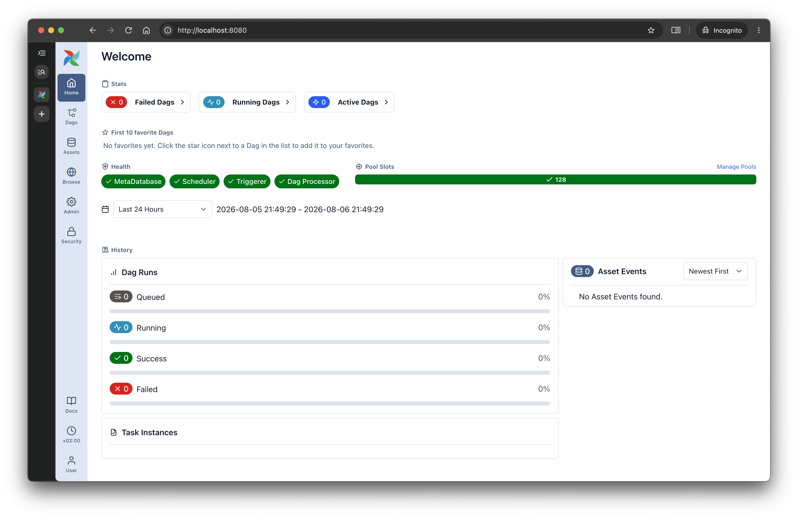
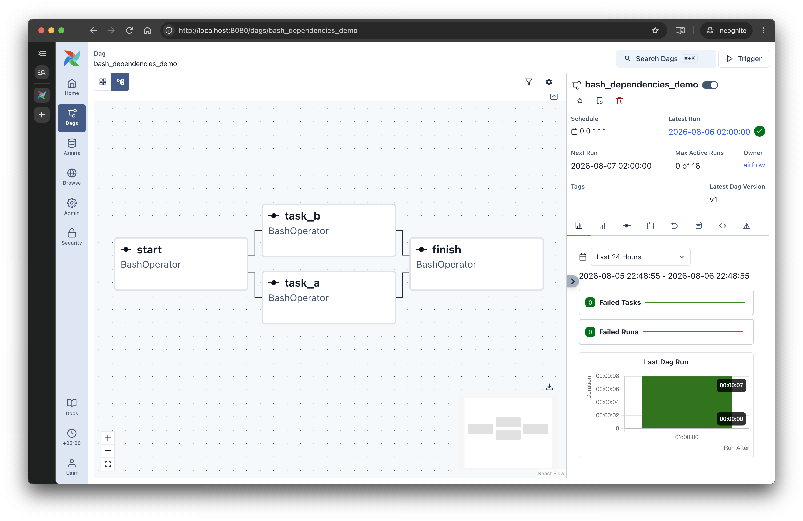

Day 1 · Apache Airflow
Apache Airflow:
Basic concepts
Apache Airflow · Workshop
About me
- Big Data Engineer with extensive experience in Python
- Enthusiastic about math and machine learning
- Senior Big Data Software Engineer at Softserve
Roman Dryndik
Senior Big Data Software Engineer
Apache Airflow · Workshop
Introduction to Apache Airflow
Apache Airflow · Workshop
S4
Evolution of orchestration
From Cron scripts to DAG orchestration
Cron
- Isolated scripts without knowledge of dependencies.
- Difficult to scale safely and handle retries.
Airflow
- Explicit dependency graph and order control.
- Run history, observability, and backfill out of the box.
Apache Airflow · Workshop
S5
Workflow Orchestration
What is workflow orchestration?
- Coordinating tasks in the right order.
- Retries, error handling, and SLA.
- Parallelism and resource management.
- Observability: statuses, logs, and run history.
Apache Airflow · Workshop
S6
ETL/ELT as a DAG
Why a real ETL pipeline is a graph
Apache Airflow · Workshop
S7
Limits of applicability
Batch Orchestration vs Streaming
- Airflow was designed as a batch orchestrator.
- For real-time and event-by-event processing, Flink/Kafka are better.
- Airflow is excellent for schedules, backfill, and quality checkpoints.
Apache Airflow · Workshop
S8
Key advantages
Why teams choose Airflow
| Feature | Value for the team |
|---|---|
| DAG as Python code | Git, PR, review, CI/CD. |
| Providers | Integrations with databases, clouds, and messaging systems. |
| UI and observability | Visibility into dependencies, statuses, and logs. |
| Extensibility | Custom hooks/operators for your platform. |
| Backfill | Reloading and recalculating historical windows. |
Apache Airflow · Workshop
S9
Trade-offs
What to prepare for during adoption
- Steep learning curve: orchestration requires design discipline.
- The scheduler and metadata DB can become bottlenecks under poor DAG design.
- You need conventions for style, retry policies, and SLA.
Apache Airflow · Workshop
S10
Version comparison
Airflow 2.x vs 3.x
| Aspect | 2.x | 3.x |
|---|---|---|
| Task execution | Direct access to the database | Via Task SDK and API |
| Worker isolation | Limited | Explicit isolation |
| DAG versioning | Limited | DAG Versioning |
| Assets | No native model | Has data-aware scheduling |
Apache Airflow · Workshop
S11
Airflow 2.x vs 3.x
The main shift: worker isolation
Apache Airflow · Workshop
S12
3.x architecture
Why part of the core was rewritten
- Security and isolation of task execution.
- Preparing for a polyglot future (SDKs beyond Python).
- Reducing pressure on the metadata DB.
- New UI models and data-aware scheduling.
Apache Airflow · Workshop
S13
Migration risks
The main trap when moving to 3.x
from airflow.models.taskinstance import TaskInstance
# Anti-pattern for 3.x: directly reading internal models from task code
def bad_task(**ctx):
ti = TaskInstance.get_task_instance(
dag_id="demo",
task_id="step",
run_id=ctx["run_id"]
)
return ti.stateApache Airflow · Workshop
Deploying Airflow
Apache Airflow · Workshop
S15
Deployment options
Ways to deploy Airflow
The choice depends on the team stage, SLA, security, and budget.
| Option | For whom | Pros | Limitations |
|---|---|---|---|
| Local Python (pip + LocalExecutor) |
Learning, quick experiments |
Up and running in minutes, minimal infrastructure |
Does not reflect real production |
| Docker Compose | Team dev environment, workshop, pre-prod |
Close to production topology, predictable |
Manual administration and upgrades |
| Kubernetes + Helm (self-managed) |
Mature platform/data team |
Scalability, flexibility, control |
High operational complexity |
| Managed Airflow (MWAA / Composer / Astronomer) |
Focus on the data product, not on ops |
Less routine, faster time-to-value |
Cost, provider limitations |
| Hybrid (control plane managed + compute self-hosted) |
Strict requirements for networking and security |
Balance of control and speed |
More complex architecture and governance |
The right choice is context-dependent and should reflect the team's current needs.
Apache Airflow · Workshop
S16
Managed Airflow
Composer vs MWAA vs Astronomer
| Platform | Advantage | Drawback |
|---|---|---|
| GCP Composer | Deep integration with GCP | Vendor lock-in |
| AWS MWAA | Managed service in AWS | Limited configuration flexibility |
| Astronomer | Strong DX and tooling | Additional cost |
Apache Airflow · Workshop
S17
Installation
Installing Airflow with Docker Compose
curl -LfO 'https://airflow.apache.org/docs/apache-airflow/stable/docker-compose.yaml'
mkdir -p ./dags ./logs ./plugins ./config
# AIRFLOW_UID — for correct permissions on mounted folders
# FERNET_KEY — encrypts sensitive fields in the metadata DB
echo -e "AIRFLOW_UID=$(id -u)\nFERNET_KEY=$(openssl rand -base64 32 | tr '+/' '-_')" > .env
docker compose up airflow-init # one-time initialization
docker compose upApache Airflow · Workshop
S18
Practice
Step-by-step Docker startup
- Download the template
docker-compose.yaml. - Create folders
dags,logs,plugins. - Prepare a
.envfile withAIRFLOW_UIDand keys. - Run
docker compose up airflow-init. - Start the services:
docker compose up -d.
Apache Airflow · Workshop
S19
Initialization
Why AIRFLOW_UID and FERNET_KEY are needed
export AIRFLOW_UID=$(id -u)
export AIRFLOW_GID=0
export FERNET_KEY=$(python -c "from cryptography.fernet import Fernet; print(Fernet.generate_key().decode())")
docker compose up airflow-initAIRFLOW_UIDis needed for correct permissions on the volume.FERNET_KEYencrypts sensitive fields in the metadata DB.
Apache Airflow · Workshop
S20
Compose topology
Services and connections in Airflow 3.x
Apache Airflow · Workshop
S21
Component roles
Airflow 3.x components
| Component | Purpose |
|---|---|
| Metadata DB | Stores the state of DAGs, DagRuns, TaskInstances, connections, variables, and execution history. |
| API Server | A single access point to Airflow state and operations for the UI, SDK, and internal services. |
| Scheduler | Schedules runs, evaluates dependencies, and decides which tasks to start next. |
| Worker | Runs task instances in the execution environment and sends results/statuses back. |
| Triggerer | Handles deferrable tasks and asynchronous waits without blocking worker slots. |
| Redis | Broker/queue for delivering tasks and control messages (for example, in a Celery topology). |
| DAG Processor | Parses DAG files, validates DAG code, and serializes definitions for the scheduler/UI. |
| Web UI | Visualization of DAGs and runs, viewing logs, and manual operations (trigger, clear, pause/unpause). |
Apache Airflow · Workshop
S22
Troubleshooting
Common startup issues
| Symptom | Cause | Solution |
|---|---|---|
| UI is blank | init was skipped | Run airflow-init again |
| DAG is not visible | Import error / path issue | Check the scheduler and dag-processor logs |
| No runs | DAG paused | Unpause in the UI or CLI |
Apache Airflow · Workshop
UI
Apache Airflow · Workshop
S24
Web UI
Airflow interface

Apache Airflow · Workshop
S25
Web UI
Anatomy of the Airflow 3.x interface
- DAGs: list of pipelines and their health.
- Grid: status of runs and task instances over time.
- Graph/Gantt: dependencies and durations.
- Admin/Assets: connections, variables, and data assets.
Apache Airflow · Workshop
S26
Day-to-day work
Grid, Graph, and Gantt
- Grid: first, we look where and when a run failed.
- Graph: we analyze upstream/downstream and trigger rules.
- Gantt: we look for time bottlenecks.
- Task details: we check logs, try number, duration, and the worker hostname.
- Auto-retry vs manual restart: we distinguish transient failures from code errors.
| Screen | When to open it | What to look for |
|---|---|---|
| Grid | Production incident | Problematic run, task status, and failure pattern by date |
| Graph | The chain breaks | Broken upstream, incorrect trigger rule, excess dependencies |
| Gantt | SLA degradation | Long tasks, executor queue, and time bottleneck |
Apache Airflow · Workshop
Architecture and key concepts
Apache Airflow · Workshop
S28
Terminology basics
DAG, DagRun, Operator, Task, TaskInstance
- DAG - description of a process as a directed graph of dependencies (what runs and in what order). An analogy to a script or blueprint.
- DagRun - a specific run of a DAG for a given time interval. An analogy to one execution of a script on a schedule.
- Operator - a template for an action: Bash, Python, SQL, Sensors. An analogy to a class or step type.
- Task - a concrete node in a DAG, created from an Operator and having
task_id. An analogy to an object/instance of a step. - TaskInstance - a run of a Task in a specific DagRun (for a specific date/interval) with its own state:
queued,running,success,failed.
| Airflow entity | What it is | Analogy |
|---|---|---|
| DAG | Graph of work and dependencies | Recipe/blueprint of the process |
| DagRun | One DAG run over time | One run of the recipe (for example, for a day) |
| Operator | Step type | Class in OOP |
| Task | A concrete step in the DAG | Object (instance of a class) |
| TaskInstance | Task in a specific run | State of the object over time |
Apache Airflow · Workshop
S29
Example
Operator as a template: BashOperator
from airflow.operators.bash import BashOperator
say_hello = BashOperator(
task_id="say_hello",
bash_command="echo Hello",
)say_hello here is a Task created from the Operator template.Apache Airflow · Workshop
S30
Operators
Operator categories
- Action operators: perform a business action.
- Transfer operators: move data between systems.
- Sensors: wait for an event or data readiness.
- Deferrable operators: save worker slots while waiting.
Apache Airflow · Workshop
S31
Cheat sheet
Top 5 operators
| Operator | Package | Purpose |
|---|---|---|
| PythonOperator | core | Python functions |
| BashOperator | core | Shell commands |
| EmptyOperator | core | Helper graph nodes |
| TriggerDagRunOperator | core | Launch another DAG |
| PostgresOperator | postgres | SQL in Postgres |
Apache Airflow · Workshop
S32
Example DAG
DAG example
from airflow import DAG
from airflow.operators.bash import BashOperator
from datetime import datetime
with DAG(
dag_id="bash_dependencies_demo",
start_date=datetime(2026, 1, 1),
schedule="@daily",
catchup=False,
) as dag:
start = BashOperator(task_id="start", bash_command="date")
task_a = BashOperator(task_id="task_a", bash_command="echo 'Processing A'; sleep 2")
task_b = BashOperator(task_id="task_b", bash_command="echo 'Processing B'; sleep 3")
finish = BashOperator(task_id="finish", bash_command="echo 'Done'")
start >> [task_a, task_b] >> finishApache Airflow · Workshop
S33
Practice DAG
Parallel and sequential execution
Parallel
start >> [task_a, task_b] >> finishBoth tasks run in parallel; the branches join at
finish.Sequential
start >> task_a >> task_b >> finishtask_b starts only after task_a succeeds.Apache Airflow · Workshop
S34
Visualization
DAG example in the UI

Apache Airflow · Workshop
S35
Execution model
A DAG file is a blueprint, not a process
A single DAG file produces many DagRuns, and each DagRun contains its own TaskInstances.
Apache Airflow · Workshop
S36
Code vs process
How Airflow sees a DAG file
The scheduler parses the DAG definition, creates a
DagRun, and tracks each task in that run as a separate TaskInstance.Apache Airflow · Workshop
S37
TaskInstance states
Task lifecycle
| Status | Meaning |
|---|---|
| queued | Waiting for an execution slot |
| running | Currently running on a worker |
| success | Completed successfully |
| failed | Completed with an error |
| skipped | Skipped by DAG logic |
| upstream_failed | Was not started due to upstream failure |
Apache Airflow · Workshop
S38
Connection & Hook
Hooks
- Hook is Airflow’s software client to a service (Postgres, S3, GCS, Slack, etc.).
- Connection stores connection parameters: host, port, login, password, schema, and extras.
from airflow.providers.postgres.hooks.postgres import PostgresHook
def read_users():
hook = PostgresHook(postgres_conn_id="analytics_pg")
rows = hook.get_records("SELECT id, email FROM users LIMIT 100")
return rowsApache Airflow · Workshop
S39
Sensors
Sensors
- Sensor is a special type of task that waits for a condition to be met before continuing.
- poke — periodic polling of a condition: the sensor checks every few seconds whether the event has occurred.
- deferrable — the task temporarily releases the worker and waits asynchronously via the Triggerer.
- deferrable is better for long waits because it saves worker slots.
- Why it is needed: sensors help run the next step only after a file, event, API response, or other data readiness condition appears.
- The choice depends on whether you need simple polling or more scalable asynchronous waiting.
from airflow.providers.standard.sensors.filesystem import FileSensor
wait_for_file = FileSensor(
task_id="wait_for_drop",
filepath="/opt/airflow/data/input.csv",
poke_interval=30,
timeout=1800,
deferrable=True,
)Apache Airflow · Workshop
S40
Variables
Variables
- A Variable is a global key-value store in the metadata DB for runtime configuration of DAGs.
- Do not read a Variable at the top level of a DAG file; it slows down and complicates parsing.
from airflow.models import Variable
@task
def send_report():
channel = Variable.get("alerts_channel", default="#data-alerts")
return channelApache Airflow · Workshop
S41
XCom
XCom
- XCom (cross-communication) — a mechanism for exchanging data between Airflow tasks.
- Stores small values in the metadata DB.
- Each value is tied to DAG + run + task + key.
- The data belongs to a specific run, rather than being global.
- Returning a value from one
@taskand passing it to another happens via XCom.
TaskFlow
@task
def extract():
return {"cnt": 42}Classic API
ti.xcom_push(key="cnt", value=42)
ti.xcom_pull(task_ids="extract", key="cnt")Apache Airflow · Workshop
S42
TaskFlow data passing
XCom in TaskFlow
- extract() returns a dictionary, and Airflow stores it as XCom.
- transform(data) gets the result as an argument, effectively doing an xcom_pull.
- As a result, one task passes data to the next without an explicit push/pull call.
- This is the convenient TaskFlow syntax for a chain of data processing between tasks.
@task
def extract():
return {"raw_value": 42}
@task
def transform(data: dict):
return data["raw_value"] * 2
transform(extract())Apache Airflow · Workshop
S43
Component roles
How Airflow moves tasks through the system
| Component | Role | What it does |
|---|---|---|
| DAG Processor | Parsing | Reads DAG files and prepares the graph for execution. |
| Scheduler | Scheduling | Decides when to run task instances and in what order. |
| Executor | Dispatcher | Routes tasks to the appropriate execution environment. |
| Worker | Executor | Actually executes the task code. |
| Metadata DB | State | Stores statuses, logs, metadata, and run history. |
| API Server | API | Handles web endpoints, the UI, and orchestration control. |
| Triggerer | Waiting | Supports deferrable tasks and asynchronous waits. |
Apache Airflow · Workshop
S44
Executor vs Worker
Executor vs Worker
| Role | Executor | Worker |
|---|---|---|
| Purpose | Task routing | Actual execution |
| Analogy | Taxi dispatcher | Driver |
| Where it lives | Orchestration service | Execution environment |
Apache Airflow · Workshop
S45
Executors
Most common executors
| Executor | Principle | Backend | When to use it |
|---|---|---|---|
| Sequential | One task at a time | None | Local experiments |
| Local | Parallel execution on a single server | None | Small installations |
| Celery | Task queue | Redis/RabbitMQ | Classic production |
| Kubernetes | Pod per task | K8s API | Cloud elasticity |
Apache Airflow · Workshop
S46
Task SDK
Task Execution API in Airflow 3.x
- Worker runs task code and interacts with Airflow through the Task SDK, not directly with the database.
- Task SDK provides an API for getting context, updating status, heartbeat, and working with XCom.
- API Server acts as an intermediate layer between task execution and Airflow’s internal services.
- Metadata DB stores task state, DAG runs, and other execution metadata.
- This architecture makes Airflow 3.x more modular, secure, and scalable.
Apache Airflow · Workshop
Practical lab
Apache Airflow · Workshop
Day 1 complete
Apache Airflow · Workshop